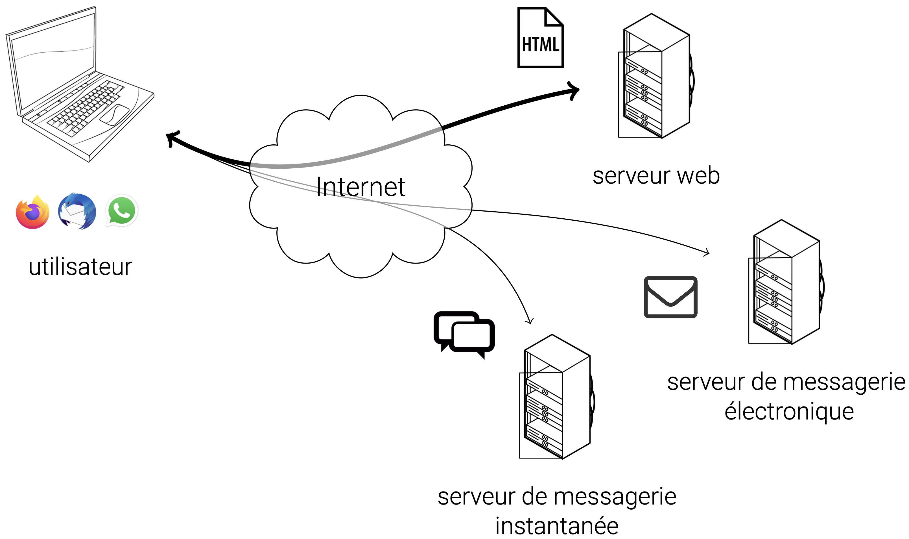
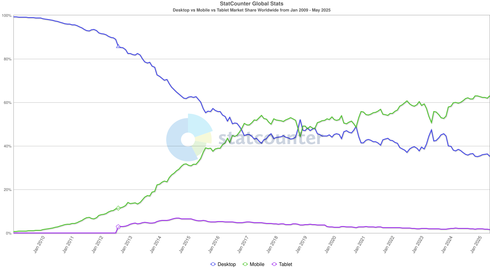
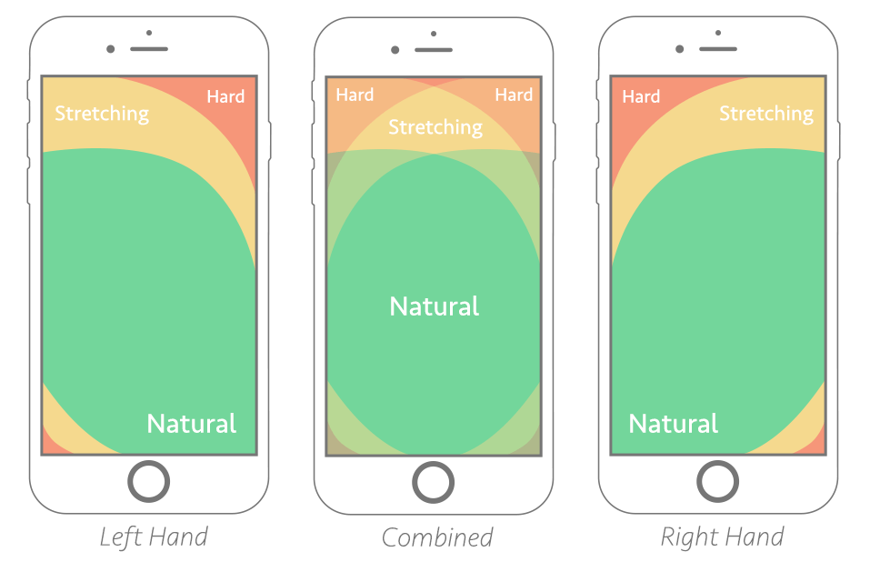

Objectif du cours
Concevoir des interfaces (pages) web réactives
- Structuration/organisation du contenu (texte, images, vidéos) : HTML
- Présentation (visuelle) du contenu : CSS
- Rendre ce contenu interactif : JavaScript

Objectif du cours
Concevoir des interfaces (pages) web réactives


Internet et Web
Internet est un réseau de réseaux. Le Web est une partie de l’information circulant sur Internet.
Le Web : Environnement client-serveur
- Client : ordinateur/logiciel qui demande une ressource. Le plus souvent, un navigateur web qui demande une ressource web ou qui sollicite un service web.
- Serveur : ordinateur/logiciel qui répond à cette demande et qui fournit la ressource ou le service.
Le Web : Uniform Resource Locator (URL)
- Pour demander une ressource à un serveur, le client doit pouvoir l'identifier
- Il utilise pour cela une URL de la forme :
protocole://adresse/chemin/ressource
protocoleest un protocole de communication entre deux ordinateursadresseest l'adresse réseau du serveur (adresse IP ou nom de domaine)cheminest le nom de l'application et/ou le chemin où trouver la ressource sur le serveurressourceest le nom de la ressource demandée
Le Web : Uniform Resource Locator (URL)
- Pour demander une ressource à un serveur, le client doit pouvoir l'identifier
- Il utilise pour cela une URL de la forme :
protocole://adresse/chemin/ressource
http://www.univ-rouen.fr/http://192.168.0.3/index.htmlhttp://mastersd.univ-rouen.fr/sime.phphttps://universitice.univ-rouen.fr/course/view.php?id=23754http://localhost:8080/MonServiceWeb/meteo
Le Web : Hypertext Transfer Protocol (HTTP)
- Pour communiquer, le client et le serveur s'échangent des messages
- Ces messages respectent une syntaxe prédéfinie
- Pour le Web, cette syntaxe est définie par le protocole HTTP (ou HTTPS en version chiffrée)
Exemple de requête HTTP envoyé par le client vers le serveur :
GET /sime.html HTTP/1.1
Host: mastersd.univ-rouen.fr
...
User-Agent: Mozilla/5.0 (X11; Linux x86_64)
Accept: text/html,application/xhtml+xml,...
Referer: http://mastersd.univ-rouen.fr
...
Le Web : Hypertext Transfer Protocol (HTTP)
- Pour communiquer, le client et le serveur s'échangent des messages
- Ces messages respectent une syntaxe prédéfinie
- Pour le Web, cette syntaxe est définie par le protocole HTTP (ou HTTPS en version chiffrée)
Exemple de réponse HTTP envoyé par le serveur vers le client :
HTTP/1.1 200 OK
Date: Mon, 27 Jul 2009 12:28:53 GMT
Server: Apache/2.2.14 (Win32)
Content-Type: text/html; charset=UTF-8
<!DOCTYPE html>
<html>
<head>
...
Exemple: le client est un navigateur web et la ressource est une page web
- Quand on saisie une URL dans la barre d'adresse, le navigateur envoie une requête HTTP au serveur
- Le serveur réceptionne la requête, la décode, la traite et envoie la réponse, le plus souvent sous la forme d'une page web (HTML/CSS/JS)
- Le navigateur interprète et affiche le contenu de la page

Ressources web
- Une ressource web est la ressource cible d’une requête d’un client vers un serveur
- Au sens stricte, il s’agit de tout ce qui peut être identifié sur le Web (nommé et adressé)
- Par exemple :
- une page web (HTML/CSS/JS)
- une image ou une vidéo
- un service (par exemple ”la météo du jour à Rouen”)
- des données (XML, JSON)
- un fichier à télécharger
- etc.
- Dans le cadre de ce cours, les ressources web seront principalement des pages web
Page web = document hypertexte
Un hypertexte est un document ou un ensemble de documents informatiques qui permet de passer d’une information à l’autre grâce à un système de renvois appelés hyperliens, ou liens hypertextes.
(source: wikipedia)
- Web = hypertexte + internet
- Plus simplement, une page HTML contenant des hyperliens
- Un hyperlien déclenche l'envoi automatique d'une nouvelle requête HTTP vers le serveur
- Un ensemble de pages web regroupées dans une même application est appelé site web
- Toutes les pages d'un site sont connectées, directement ou indirectement, à toutes les autres pages
Site web statique
- Dans sa forme la plus basique, un site web est dit statique
- Constitué de pages web statiques, dont le contenu ne change pas en fonction des requêtes
- Chaque page est un fichier HTML, stocké sur le serveur et associé à une URL qui lui est propre
- Une requête vers une URL renvoie invariablement le même fichier, avec le même contenu
- Pour changer le contenu d’une page, il faut mettre à jour le fichier sur le serveur
Site web dynamique
- Aujourd'hui, la plupart des sites web sont dynamiques
- Le contenu des pages change en fonction de la requête du client
- Dépend des caractéristiques de la requête : terminal, date et heure, formulaire rempli par l’utilisateur, etc.
- Ces pages web sont générées à la volée coté serveur et/ou exécutées coté client
Site web dynamique
Plusieurs façons de générer des pages web dynamiques:
- Programme serveur : programme externe dans un langage dédié (Jakarta EE, .NET) qui génère des pages HTML, les transmet au serveur web qui les envoie ensuite au client
- Server-side scripting : pages HTML incorporant du code dans un langage de script serveur (ASP, PHP, JSP, etc.), interprétées par le serveur avant d’être transmises au client
- Client-side scripting : pages HTML incorporant du code dans un langage de script client (JavaScript), directement transmises au client et interprétées par le navigateur web
- Applications Internet Riches : programme dans un langage générique (web ou non), qui s'exécute côté client et pouvant envoyer des requêtes web (JS+AJAX, JavaFX, Android, etc.)
Parcours SIME: nous approfondirons le point 3 au second semestre et les points 1 et 2 en M2
Le Web sur PC, mobiles et tablettes
Source: StatCounter
Le Web sur PC, mobiles et tablettes
- Smartphone vs ordinateur + différences importantes entre terminaux mobiles
- Orientation, taille et résolution des écrans
- Écran tactile vs clavier/souris
- Capacités de traitement et de stockage
- Utilisation en déplacement vs sédentaire
- Un site web sera consulté sur PC et sur terminaux mobiles
- On ne connaît pas les caractéristiques de l'appareil du client
- Il faut donc concevoir des interfaces adaptatives
Deux façons de penser le Responsive Web Design
- Desktop first (Graceful degradation)
- Application complète pour les plateformes les plus pointues (ordinateurs de bureaux)
- Adapter (détériorer) a posteriori pour les plateformes plus limitées (retirer du contenu, simplifier le design, etc.)
Souvent compliqué car une fois l’application complète conçue, difficile de retirer les parties superflues ou de simplifier les contenus
Deux façons de penser le Responsive Web Design
- Mobile first (Progressive enhancement)
- Application web mobile adaptée aux terminaux les plus limités (ou presque)
- Améliorer/compléter la conception progressivement pour les plateformes plus pointues
L’ idée que le design pour mobile est le plus ergonomiquement simple et doit être conçu en premier.
L'approche recommandée est Mobile first
- Concevoir une application épurée qui se concentre sur l’essentielle : le contenu (Mobile-first is content-first)
- Oblige à sélectionner/prioriser le contenu et les fonctionnalités

L'approche recommandée est Mobile first
Il faut prioriser le contenu en 2 ou 3 niveaux d'importances :
- Petits écrans (smartphone) : contenus prioritaires et fonctionnalités essentielles
- Écrans moyens (tablettes) : contenus prioritaires et secondaires avec une mise en page adaptée
- Grands écrans (ordinateurs de bureau) : tous les contenus, avec un design repensé
Note : développer 2 versions, site ”desktop” et site ”mobile”, empêche la conception graduelle de l’ interface (pas du responsive web design)
L'approche recommandée est Mobile first
Il faut également penser l’ergonomie intelligemment :
Sur un smartphone, prendre en compte la zone de confort du pouce pour faciliter la navigation
L'approche recommandée est Mobile first
Il faut également penser l’ergonomie intelligemment :
Prévoir des actionneurs suffisamment gros et espacés adaptés aux doigts
L'approche recommandée est Mobile first
Il faut également penser l’ergonomie intelligemment :
- Utiliser les actionneurs et les capteurs mobiles :
- biométrie (e.g. authentification)
- géolocalisation (e.g. pour adapter la langue)
- micro (e.g. pour faciliter la saisie)
- choix du clavier (e.g. pour la saisie de nombre)
- utiliser des gestes tactiles (swipe, pinch, etc.)
- Interfaces plus intuitives car moins d’aides visuelles (retour d'interactions, menu contextuel, etc.)
- Liens vers les applications mobiles populaires (téléphone, réseaux sociaux, navigation, etc.)
Performances des terminaux très hétérogènes
The average time it takes to fully load a mobile landing page is 22 seconds, according to a new analysis. Yet 53% of mobile site visitors leave a page that takes longer than three seconds to load.
- Optimiser pour des performances limitées dés le début de la conception
- Optimiser les images : adapter la taille, le format et le nombre en fonction de l'écran
- Réduire le code source au maximum (e.g. en retirant les effets CSS inutiles)
- Optimiser les traitements serveur (caching, accès BDD limités, communications asynchrones)
Quelques liens pour aller plus loin...
- How the internet works: La playlist ”How the internet works” sur la chaîne Youtube du site code.org
- Documentation Google: Documentation Google sur les bonnes pratiques pour le référencement
- Mobile first indexing: Bonnes pratiques pour l'indexation de sites mobiles et l'indexation orientée mobile
- Lighthouse: test d’optimisation pour mobile
- Responsive Web Design: article fondateur sur la conception responsive (2010)
- Internet is Hard: tutoriaux en anglais très accessibles
- Web.dev: Séries d'articles pour approfondir la conception responsive